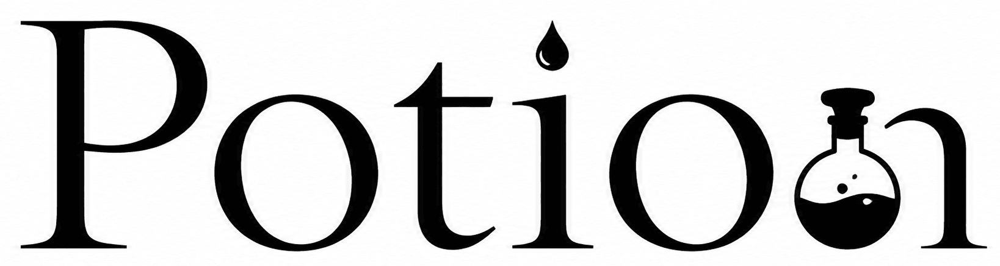

Potion uses a Notion integration token. In Notion, give the connection read-content and update-content access, then share the pages you want to read and format with it.
Notion Pages
Page
Settings
Physical page buttons
Night-mode pages
Log out of Potion?
The stored Notion token will be removed from this device.

Made for quiet reading, thoughtful wandering, and ideas worth keeping. Enjoy!